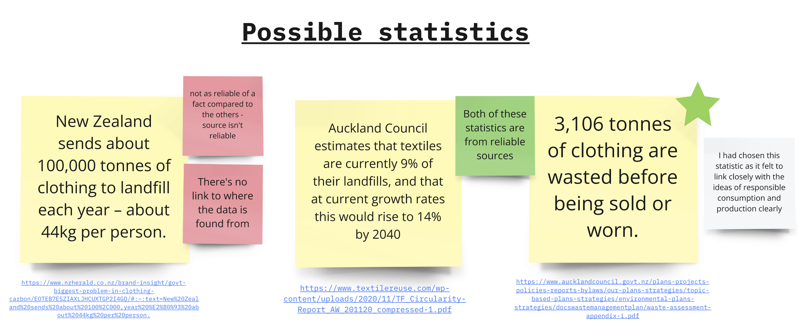

Assignment 1: A sequence of primitives
Design 240
Research
Starting with this assignment was looking into what sdgs I wanted to go into when looking for a statstic to work on. I found to be drawn to goal 12 - Responsible consumption and production.
As I wanted to look specifically into fashion/textile waste that is done due to the lack of responsible consumption and production that can be seen within fast fashion and retail.
As someone working in retail - I see how much waste is done to put stock onto the shelves.

I had then looked into different statstics I could look into and found 3 main statstics I liked.
New Zealand sends about 100,000 tonnes of clothing to landfill each year – about 44kg per person.
I had found this statstic to be interesting, however there wasnt any lnk to where the data was found, only tracing back to a nzherald article. There isnt any signs of where the numbers come from and so I didn't go ahead with this statstic.
Auckland Council estimates that textiles are currently 9% of their landfills, and that at current growth rates this would rise to 14% by 2040
This statstic was interesting and heavily links to New Zealand and specifically Auckland. It showcases the increase growing in terms of how bad throwing away textiles are.
3,106 tonnes of clothing are wasted before being sold or worn.
Both the of the last two statistics are more reliable, as they link back to where the data is found.
However, I went with the last statstic as I felt it represented the ideas of responsible consumption better rather than just the general idea of waste and its link with textiles.

Process
I had then started on creating a GIF to then represent the idea of this statstic. I had documented this process within miro which can be looked at below.
Final Output
Artist intent
I've been interested and drawn to the sdg goal 12 of responsible consumption and production as It felt like a goal that links with the people, with the consumers. As such I wanted to look into fast fashion and retail, how consumers buy and their choices.
I had chosen the statistic of "3,106 tonnes of clothing are wasted before being sold or worn.", as I had felt this showcased the irresponsible production and consumption of clothing within Auckland.
To showcase this, I had wanted to deliver a visual narrative of this process, showing a new piece of clothing getting thrown within a pile of landfill, thus being wasted before being sold or worn. To help show how new this piece of T-Shirt is, I had added in a price tag and shining diamond shapes to show how brand new it is. Which get smaller overtime as the T-Shirt falls and the price tag falls off the T-Shirt itself.
I had used colours to help further show the difference between the "new" and the "wasted". With the new clothing being in white, a pure and bright colour, vs the black landfill of darkness and waste.
The ending frame shows the statistic as a text to help further allow people to understand the statistic. It also shows the price tag now a part of the pile, the new clothing being thrown away in the landfill.
Source code
PShape Tshirt, body, sleeve, sleeve2, neck, diamond, priceTag, string, tag, landfill1;
PShape landfill2, landfill3;
int count, x = 0;
int y = -50;
int k = 200;
float n = 1.05;
int fontSize = 1;
void setup(){
size(1000, 1000);
frameRate(50);
//Set up of the PShape for the T-Shirt
Tshirt = createShape(GROUP);
body = createShape(RECT, 50, 50, 50, 60);
body.setFill(color(255));
sleeve = createShape(QUAD, 50, 50, 30, 70, 40, 80, 70, 70);
sleeve.setFill(color(255));
sleeve2 = createShape(QUAD, 100, 50, 120, 70, 110, 80, 80, 70);
sleeve2.setFill(color(255));
neck = createShape(ELLIPSE, 75, 50, 30, 16);
neck.setFill(color(0));
neck.setStroke(false);
body.setStroke(false);
sleeve.setStroke(false);
sleeve2.setStroke(false);
Tshirt.addChild(body);
Tshirt.addChild(sleeve);
Tshirt.addChild(sleeve2);
Tshirt.addChild(neck);
//Set up of diamonds
diamond = createShape(RECT, 0, 0, 0, 0, -50);
diamond.setStroke(false);
//Set up of price tag shape
tag = createShape();
tag.beginShape();
tag.vertex(30, 10);
tag.vertex(60, 0);
tag.vertex(60, 30);
tag.vertex(30, 40);
tag.vertex(20, 30);
tag.endShape(CLOSE);
tag.setStroke(false);
string = createShape(ARC, 40, 50, 50, 50, 3, 4);
string.setStroke(color(255));
string.setFill(false);
priceTag = createShape(GROUP);
priceTag.addChild(string);
priceTag.addChild(tag);
//Set up of the random shapes used within the landfill
landfill1 = createShape(RECT, 0, 0, 80, 80);
landfill1.setFill(color(0));
landfill2 = createShape(ELLIPSE, 0, 0, 80, 80);
landfill2.setFill(color(0));
landfill3 = createShape(RECT, 0, 0, 90, 40);
landfill3.setFill(color(0));
}
void draw(){
scale(2);
background(0);
count++;
//T-Shirt placement
pushMatrix();
rotate(0.5);
scale(2);
shape(Tshirt, 75 + x, y);
popMatrix();
//Diamond shapes placement
shape(diamond, 100, 110);
shape(diamond, 390, 170);
shape(diamond, 230, 350);
//Price tag placement
shape(priceTag, 250, 110);
//Keeping the Tshirt in the middle for a bit before falling down
if(count > 40 && count < 90){
y += 5;
x += 3;
diamond.translate(0, 27);
priceTag.translate(0, 9);
}
//Diamond plusing animation
if(count % 10 == 0 ){
n = 0.5;
} else {
n = 1.05;
}
diamond.scale(n);
//Landfill moving upwards timing
if(count>90){
if (count<120){
fill(0);
pushMatrix();
renderLandfill();
popMatrix();
}else{
//landfill staying in place
background(255);
frameRate(20);
landfill(k);
landfill(-100);//Helps add density to the bottom half of the landfill
//Adding in a tag within the landfill at the end
shape(priceTag, 45, -75);
noLoop();//Stops the pile from randomly generating
}
//Adding in the text to show up on top of the landfill
textAlign(CENTER, CENTER);
fill(255);
textSize(36);
text("3,106 tonnes", 250, 400 + k);
textSize(24);
textLeading(40);
text("\nof clothing are wasted\n before being sold or worn", 250, 450 + k);
}
//Render out the frames for the GIF
//saveFrame("frames/####.png");
//if(count==120){
// for(int f = 0; f < 120; f++){
// saveFrame("frames/####" + f + ".png");
// }
//}
}
//Render the wave of landfill upwards
void renderLandfill(){
for (int n = 0; n < 10; n++) {
background(255);
landfill(k);
k -= (n/3);
}
}
//Landfill made with a cosine wave and rectangles
void landfill(int k){
float a = 0;
float inc = TWO_PI/50;
PShape[] shapes = {landfill1, landfill2, landfill3};//Array of shapes to cycle through randomly
for (int j = 0; j < 3; j++) { //Nested loop to add more density to the landfill
for (int i = 0; i < 50; i++) {
pushMatrix();
rectMode(CENTER);
translate(i*10, (random((350+cos(a)*75), 700) + k)); //Translate within the area
//of the cosine wave
rotate(random(PI)); //Translate is done first so that the rotate is done in the
//centre of the rectangle
fill(0);
shape(shapes[int(random(2))], 0, 0);
popMatrix();
a = a + inc;
}
}
}
Reflection
Within this whole asisgnment I had learnt more about coding and how to create visualizations within code and in processing. I go tto explore Java and coding aspects such as learning about arrays, conditionals and using random functions.
I felt the limitation within this assignment allowed for us to get used to coding with the shapes itself and to not lean towards using images and illustrations - skills which us designers have - to help aid within our design. It was a great base for this course as a first assignment and I cant wait to learn and explore more - espically on the interaction side of things.
References
https://sdgs.un.org/goals/goal12
https://www.nzherald.co.nz/brand-insight/govt-biggest-problem-in-clothing-carbon/EOTEB7ESZIAXLJHCUXTGP2I4GQ/#:~:text=New%20Zealand%20sends%20about%20100%2C000,year%20%E2%80%93%20about%2044kg%20per%20person.
https://www.textilereuse.com/wp-content/uploads/2020/11/TF_Circularity-Report_AW_201120_compressed-1.pdf
https://www.aucklandcouncil.govt.nz/plans-projects-policies-reports-bylaws/our-plans-strategies/topic-based-plans-strategies/environmental-plans-strategies/docswastemanagementplan/waste-assessment-appendix-i.pdf
Miroboard link: https://miro.com/app/board/uXjVNmcjx3A=/?share_link_id=596633213485